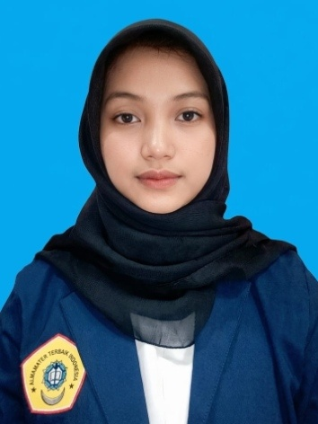
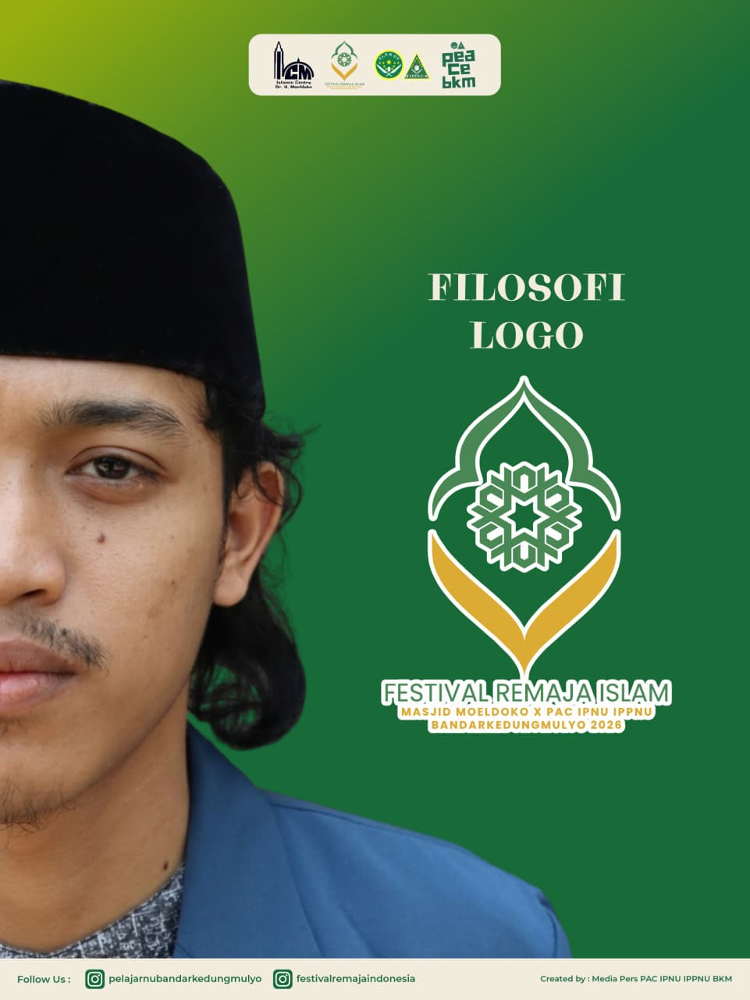
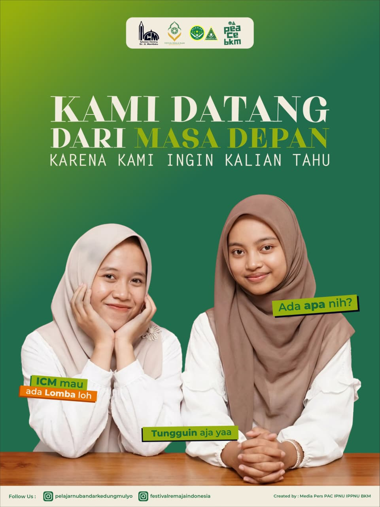
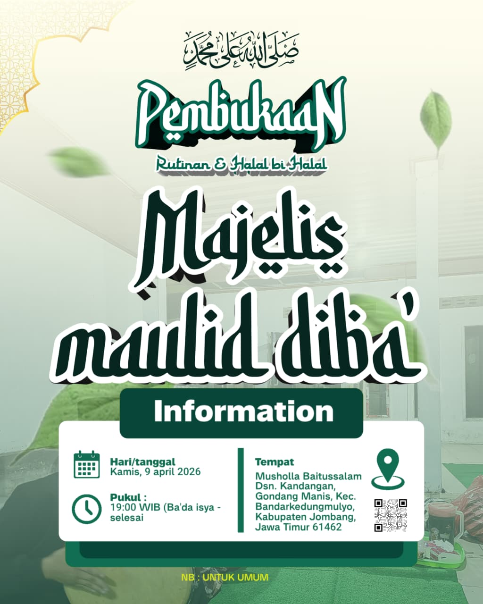
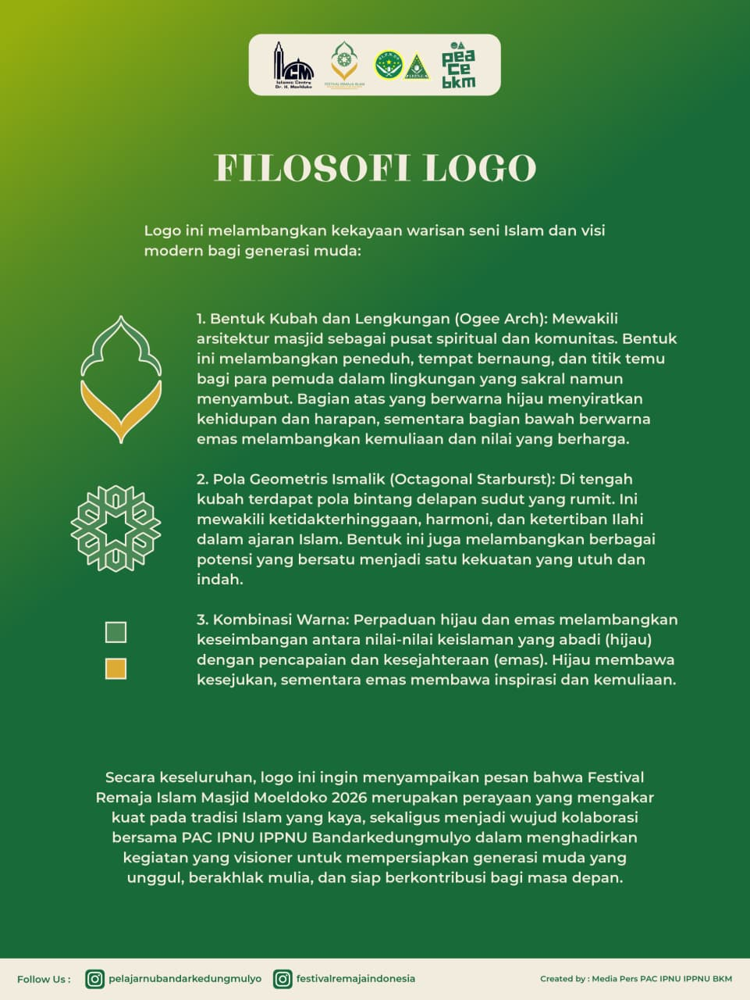

Nama saya Cahya Rachmania Hidayah.
Saya seorang desainer grafis,
dan juga videografer yang memiliki minat besar pada kreativitas.
Saya siap bekerja keras dan terus belajar.

2022-2025 : Bersekolah di MAN 10 JOMBANG.
Sebagai siswa Multimedia, pada tahun 2022 saya mengikuti lomba desain grafis
tingkat sekolah sendiri.
Saya juga pernah menjadi PDD untuk acara Festival Islam Indonesia,
serta sebagai content creator yang mengedit video kegiatan sekolah.




